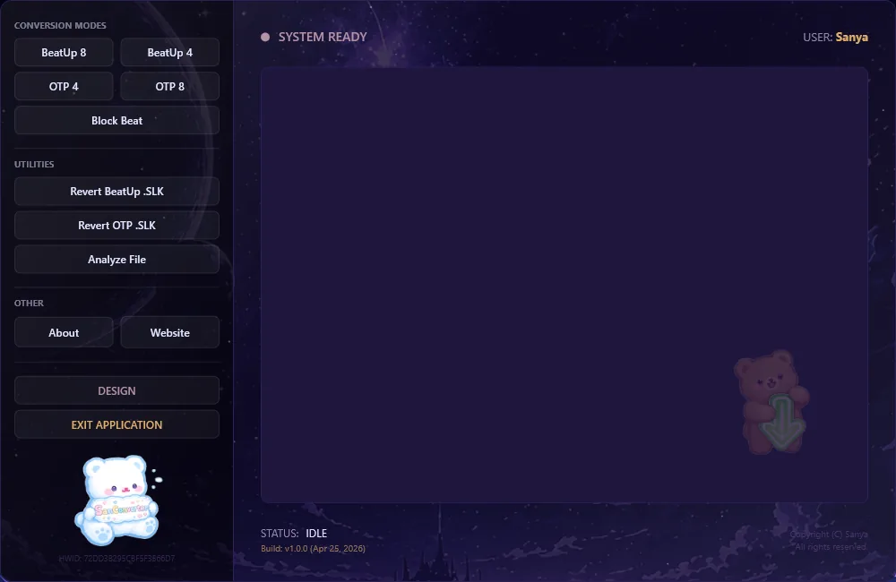

SanConverter · v1.4.4
A converter built around the chart.
Converts .SM and .SSC files to .SLK, with dedicated logic for Beat Up and One-Two Party, and reverts .SLK files to clean .SSC.

01 · v1.4.4
What is new in v1.4.4.
The overhauled level calculator, new eye-care themes, SLK utilities and analyzer fixes. The converter workflow stays familiar.
- 01
Level calculation overhaul
Fair scaling with
Math.Mincaps, TotalMadi integration for structural speed logic and an incremental +0.4 bonus for every 10% of stair patterns. - 02
10+ new designs
Cherry Blossom, Cobalt Sky, Cool Revival and eye-care themes such as Nord, Gruvbox, Solarized Dark and Zen Matcha.
- 03
SLK duplicate remover
One-click cleanup for overlapping
nnotes, automatic row shifting and safe_fixed.slkoutput. - 04
Analyzer and bug fixes
Accurate Total Keys metrics, corrected UniformGrid overlap and a better balance between long and short song pattern ratios.
02 · Charting logic
Know exactly what the converter writes.
.SM and .SSC convert to .SLK. The converter also reverts Audition Beat Up and One-Two Party .slk files to clean Stepmania .SSC.
Beat Up 8 Structure
| Arrow Vortex Key | Beat Up .SLK Key | Comment |
|---|---|---|
| 1, 2, 3 | 7, 4, 1 | Specific Note assignment |
| 4, 5, 6 | 9, 6, 3 | Specific Note assignment |
| 8 | s | Space |
| M* | Finish Move | Shift + 8 (Mine on 8th Lane) |
| 7 + 8 | f | Finish Move without Space |
| n* + 7 + 8 | Note + Finish | Note Array {1,3,4,6,7,9} |
| n + M | Double Note (hidden) | M on lane 7 |
| n + M + M | Triple Note (hidden) | M on lane 7 & 8 |
- Random Key: A note stated as
nin the .slk which Audition can read, randomly generated using a no Jack-Logic. - M: Mine.
Hold & Roll Logic (Lane 7)
Lane 7 (index 6) acts as a state marker. If a hold/roll is active here, standard key assignments are overridden.
| State | Active Lane | Key Pool | Constraint |
|---|---|---|---|
2 (Hold) | Lane 1 (Left) | {7, 4, 1} | Max 2 jacks in a row |
2 (Hold) | Lane 2 (Right) | {9, 6, 3} | Max 2 jacks in a row |
2 (Hold) | Lane 1 + 2 | {7,4,1,9,6,3} | Max 2 jacks in a row |
4 (Roll) | Lane 1 (Left) | {7, 4, 1} | No direct repeat (no Jacks) |
4 (Roll) | Lane 2 (Right) | {9, 6, 3} | No direct repeat (no Jacks) |
3 (End) | — | Resets to BU8 | — |
Beat Up 4 Structure
| Arrow Vortex Key | Beat Up .SLK Key | Comment |
|---|---|---|
| 1 | n | Random Generated Note |
| 2 | s | Space |
| 3 | Random Left | Hold* |
| 3 | Random Left no Jacks | Roll* |
| 4 | Random Right | Hold |
| 4 | Random Right no Jacks | Roll |
| 3 + 4 | Random Left-Right | Hold 3+4 (Random Left-Right Pattern) |
| 3 + 4 | Random No Repeat | Roll 3+4 (Random no repeat Pattern) |
- Hold: Holding the key for the amount of arrows you want on a specific side.
- Roll: A rolled Hold.
One Two Party 4 Logic
One-Two Party is a very sensitive gamemode; this converter supports all rules from charting lvl 1 to lvl 9.
| Arrow Vortex Key | OTP .SLK Key | Comment |
|---|---|---|
| 1 | n | Note |
| 2 | c | Change |
| 3 | d | Dance |
| 4 | s | Space |
| 1 + 2 + 3 + 4 | r | Rotation |
One Two Party 8 Logic
Fully supports all rules from charting lvl 1 to lvl 9.
| Arrow Vortex Key | OTP .SLK Key | Comment |
|---|---|---|
| 1 | n | Note |
| 2 | c | Change |
| 3 | s | Space |
| 4 | n | Note |
| 5 | c | Change |
| 6 | s | Space |
| 7 | d | Dance |
| 8 | r | Rotate |
Revert Logic
The Converter features a powerful revert function. It accurately reverts all Audition BeatUp .slk and all Audition One-Two Party .slk files back into a clean Stepmania .SSC file, preserving patterns and BPM data.
03 · Legacy conversion
Controlled random patterns.
This optional mode detects specific Arrow Vortex combinations to generate highly controlled random patterns. All other patterns are processed normally.
| Arrow Vortex Key | Beat Up .SLK Key | Pattern Logic (Muster) |
|---|---|---|
7 | n | Random key — max. 2 Jacks |
7 + 1 | n | Random LEFT (7,4,1) — max. 3 Jacks |
7 + 2 | n | Random RIGHT (9,6,3) — max. 3 Jacks |
7 + 3 | n | Random — no repeat (No Jacks) |
7 + 4 | n | Only Jacks — same random key spam max. 6 |
04 · Download
SanConverter v1.4.4
Download the SanInstaller, run it, and let the installer retrieve the latest SanConverter deployment from GitHub.
This tool is free to download and use. Reverse engineering, decompiling or redistributing modified versions of the executable is strictly prohibited.
Latest · v1.4.4